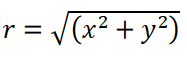
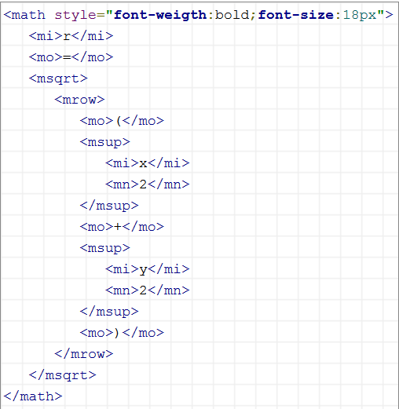
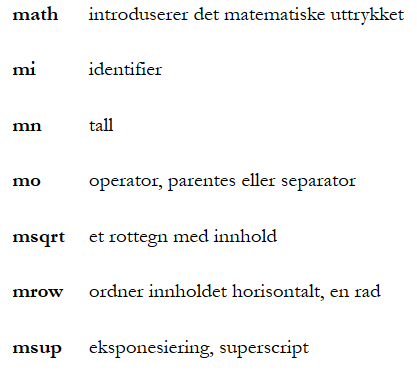
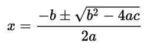
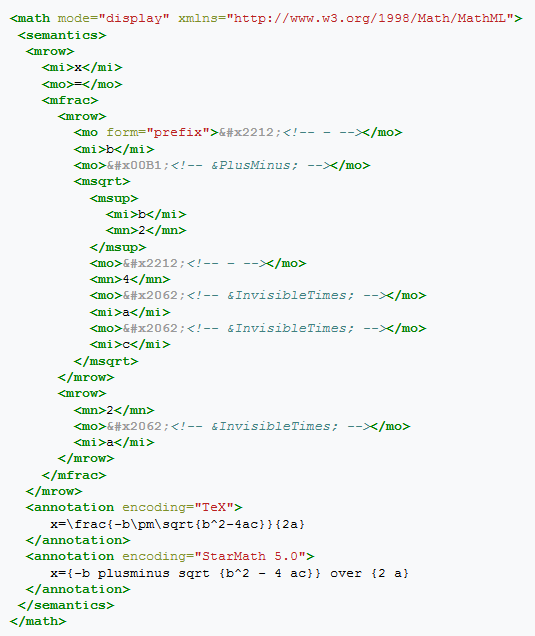
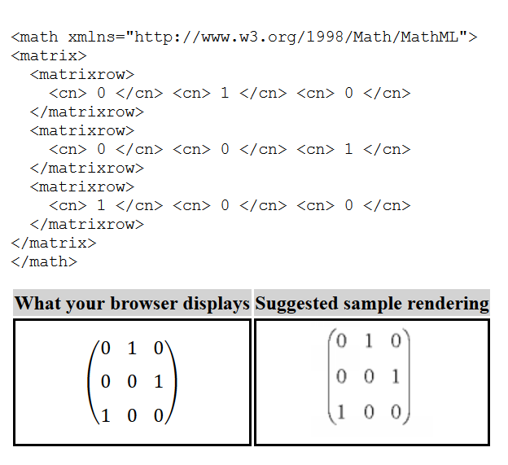

Math ML er et et matematisk språk og en applikasjon av XML for å beskrive matematiske notater, og forklare strukturen, innholdet og bruken. Det er designet for å dekke to formål, markup for strukturering av matematiske uttrykk og markup for presentasjon av matematiske uttrykk. MathMLtar sikte på å integrere matematiske formler i World Wide Web-sider og andre dokumenter. MathML er en del av HTML5 og har vært en ISO-standard ISO/IEC DIS 40314 siden 2005. MathML i HTML5 tillater mest inline HTML markup i mtext, og samsvarer med HTML-merket som brukes i MathML for å markere den innebygde teksten. Disse er kombinert med layoutelementer, som vanligvis inneholder bare elementer. Som vanlig i HTML er mange enheter tilgjengelige for å angi spesielle symboler etter navn, for eksempel PI og RightArrow. En interessant egenskap ved MathML er at enheter også eksisterer for å uttrykke normalt usynlige operatører, for eksempel InvicibleTimes for underforstått multiplikasjon. Ved å kombinere MathML og HTML, blir det enklere å skrive regnestykker i kodespråk og det ser bedre ut på nettsiden.
Eksempel 1
  
Eksempel 2
 Eksempel 3
Kilder:MathML wiki, MathML hiof, MathML XSL